<!-- menu.html -->

<style>
/* Waiting indicator centered on screen */
.waiting {
	display: none;						/* On load, remove waiting indicator image center screen */
	position: fixed;					/* Fixed on screen, also when scrolling */
	top: 50%;
	left: 50%;
	transform: translate(-50%, -50%);	/* Exactly centered */
	z-index: 1000;						/* On top of everything else */
}

/* Menu styling */
nav {
	display: flex;
	background-color: var(--menu-background);
	border-top: 1px solid var(--menu-border);
	position: fixed;
	height: 90px;
	width: 100%;		/* Support smaller screens */
	max-width: 440px;	/* Limit for larger screens */
	bottom: 0;
}
nav a {
	flex: 1;
	text-align: center;
	text-decoration: none;
	color: var(--menu-font); font-weight: normal;
	padding: 5px 0 5px 0;
	margin: 0;
}
nav a:hover {
	background-color: var(--menu-hover);
}
</style>

<script>
// Show waiting indicator
function show_waiting() {
	document.getElementById('waiting').style.display = "block";
}

// Hide waiting indicator
function hide_waiting() {
	document.getElementById('waiting').style.display = "none";
}
</script>

<!-- Waiting indicator -->


<!-- Menu bar -->
<nav>
	<a href="/network"><br>Netwerk</a>
	<a href="/buttons"><br>Knoppen</a>
	<a href="/playlists"><br>Lijsten</a>
	<a href="/status"><br>Status</a>
	<!-- Add other menu items here if needed -->
</nav>
